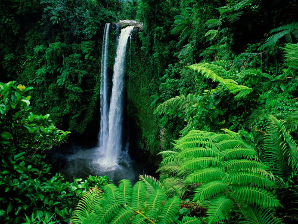
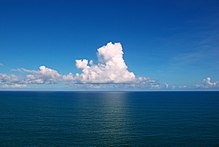

Дощові ліси
Around 40% to 75% of all biotic species are indigenous to the rainforests.There may be many millions of species of plants, insects and microorganisms still undiscovered in tropical rainforests. Tropical rainforests have been called the "jewels of the Earth" and the "world's largest pharmacy", because over one quarter of natural medicines have been discovered there. Rainforests are also responsible for 28% of the world's oxygen turnover, sometimes misnamed oxygen production, processing it through photosynthesis from carbon dioxide and consuming it through respiration.
Around 40% to 75% of all biotic species are indigenous to the rainforests. There may be many millions of species of plants, insects and microorganisms still undiscovered in tropical rainforests. Tropical rainforests have been called the "jewels of the Earth" and the "world's largest pharmacy", because over one quarter of natural medicines have been discovered there. Rainforests are also responsible for 28% of the world's oxygen turnover, sometimes misnamed oxygen production, processing it through photosynthesis from carbon dioxide and consuming it through respiration. детальніше
Океани
Saline water covers approximately 360,000,000 km2 (140,000,000 sq mi) and is customarily divided into several principal oceans and smaller seas, with the ocean covering approximately 71% of Earth's surface and 90% of the Earth's biosphere. The ocean contains 97% of Earth's water, and oceanographers have stated that less than 5% of the World Ocean has been explored. The total volume is approximately 1.35 billion cubic kilometers (320 million cu mi) with an average depth of nearly 3,700 meters (12,100 ft).
As the world ocean is the principal component of Earth's hydrosphere, it is integral to life, forms part of the carbon cycle, and influences climate and weather patterns. The world ocean is the habitat of 230,000 known species, but because much of it is unexplored, the number of species that exist in the ocean is much larger, possibly over two million. The origin of Earth's oceans is unknown; oceans are thought to have formed in the Hadean eon and may have been the impetus for the emergence of life.детальніше